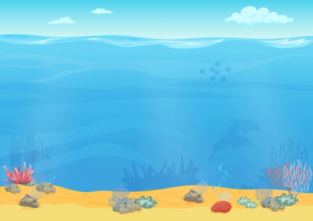
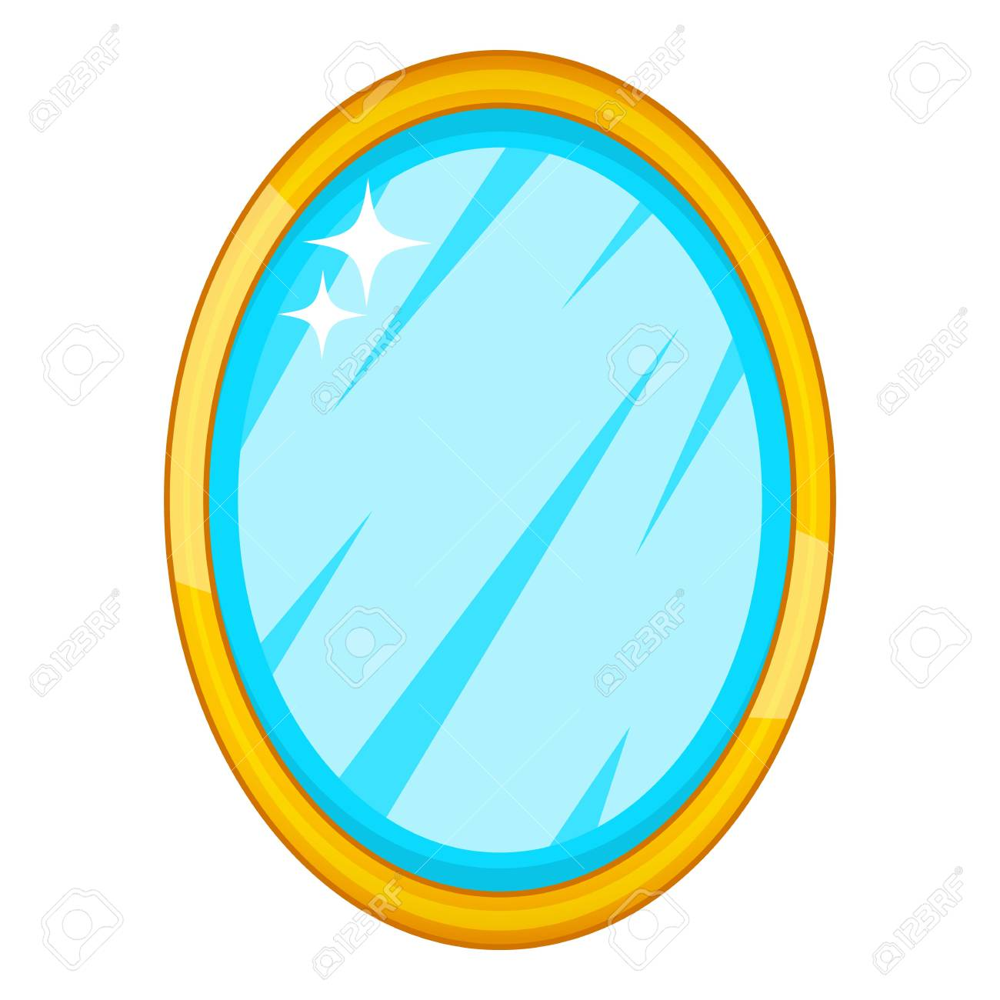
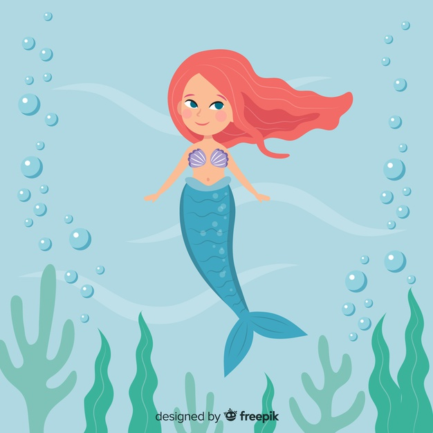

La sirena llego a la casa de su amigo el pez, le habló sobre lo que había encontrado y luego
le dijo que fueran a buscar el objeto. El pez se emocionó porque le parecía muy interesante
la forma en la que la sirena había descritó al objeto.

Masa de agua salada que cubre aproximadamente las tres cuartas partes de la superficie terrestre
Cuando llegaron al lugar de los hechos, el pez le dijo:
¡Un espejo!

¿Un espejo?, dijo la sirena
¡Un espejo mágico!, como los que salen en las películas.
La sirena obsevó con detalle que en el cristal había alguien encerrado. Mira Pez, ahí alguien
esta moviendo la boca, pero no oigo lo que dice. Tendré que ir a ver a Poseidón. El podrá ayudarnos
a sacar a la prisionera del espejo.
El pez comenzó a reírse y le dijo, espera sirena.
Sin embargo, la sirena comenzó a nadar tan rápido que el pez no pudo alcanzarla.

La sirena nadó y nadó varias semanas hasta que llegó con Poseidón.